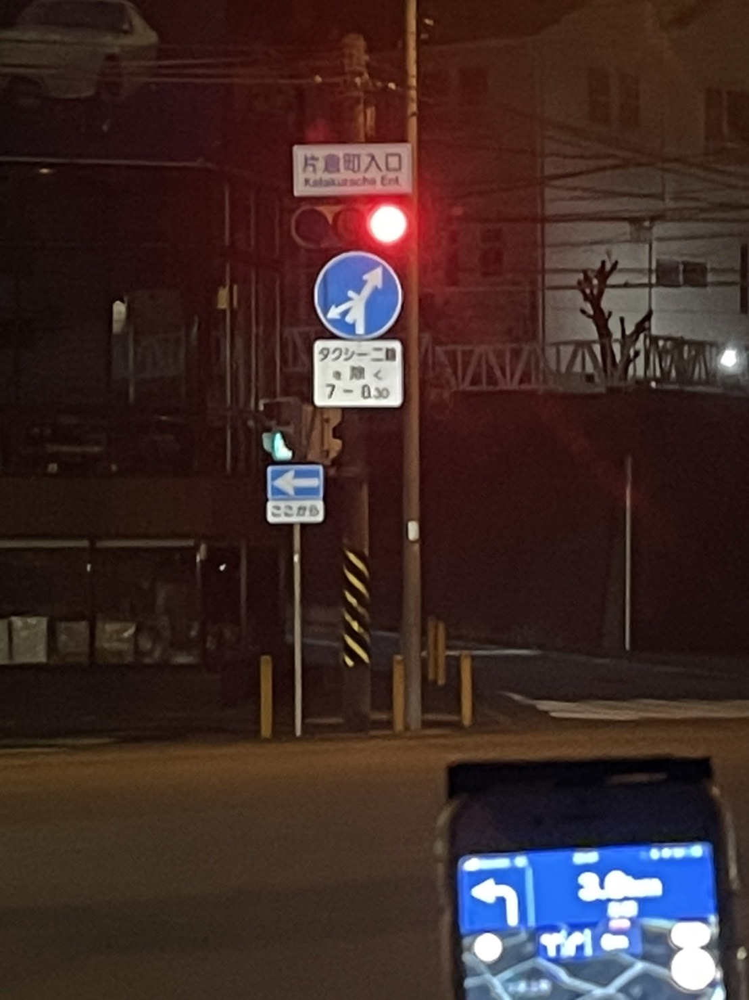
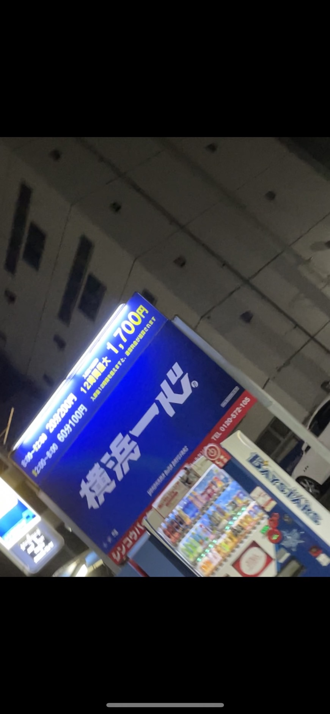
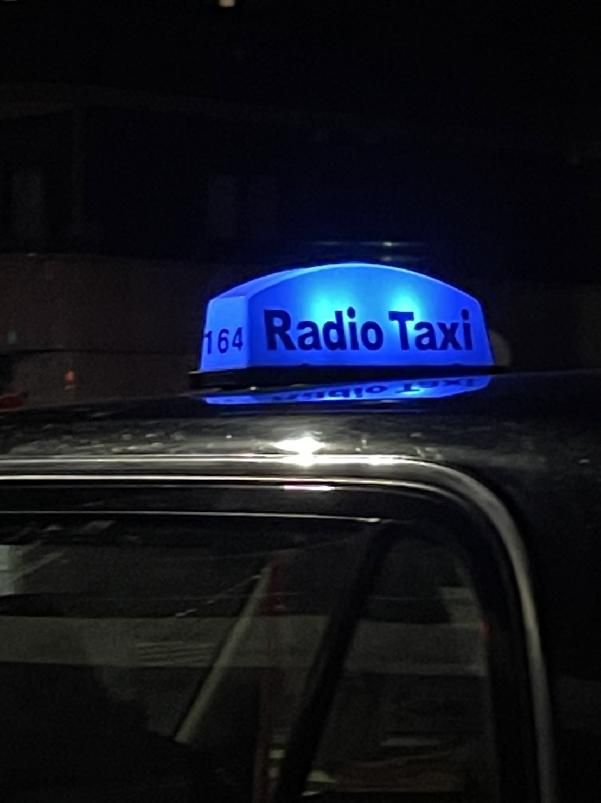

1,交差点の道路標識

撮影場所：横浜市神奈川区片倉
１０月１１日、本人撮影
説明：授業の課題である看板の写真を撮るために友達と車でみなとみらいに向かう
途中で撮った標識の写真、分岐が多く、あまり見ない矢印の形だった
２，パーキングエリアの看板

撮影場所：みなとみらい
１０月１１日、本人撮影
説明：みなとみらいにあったパーキングエリアの写真、
一番重要であるはずの利用料金の文字よりも大きく「横浜一心」
と書いてあった
３，タクシー行灯

撮影場所：桜木町
１０月１１日、本人撮影
説明：みなとみらいに向かう途中で見つけたタクシーの行灯、
普段見かけるタクシーでは社名や番号などがかかれているが、このタクシーでは
「Radio Taxi」と書かれていた